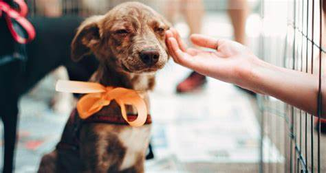

<main
  class="w-full max-w-[1440px] mx-auto py-[20px] h-full min-h-[415px] flex flex-col lg:flex-row justify-between gap-4 border-b-[3px] border-decorativo"
  id="main"
>
  <section class="w-full xl:max-w-[660px] h-full-im border-none mb-5 xl:mb-0">
    <h1
      class="text-[48px] lg:text-[64px] xl:text-[96px] font-extrabold text-text-titulo h-full xl:min-h-[290px] min-h-[200px] flex justify-center items-center w-full max-w-[660px] md:max-w-[100%] leading-[1]"
    >
      Transforma una vida hoy
    </h1>

    <p
      class="text-[16px] md:text-[20px] lg:text-[24px] lg:text-left text-center font-light text-text-parrafos h-full min-h-[60px]"
    >
      Adopta, rescata, o ayuda, cada gesto cuenta para darles una segunda
      oportunidad.
    </p>
  </section>

  
</main>
